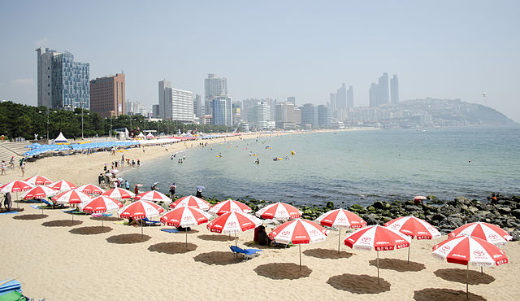
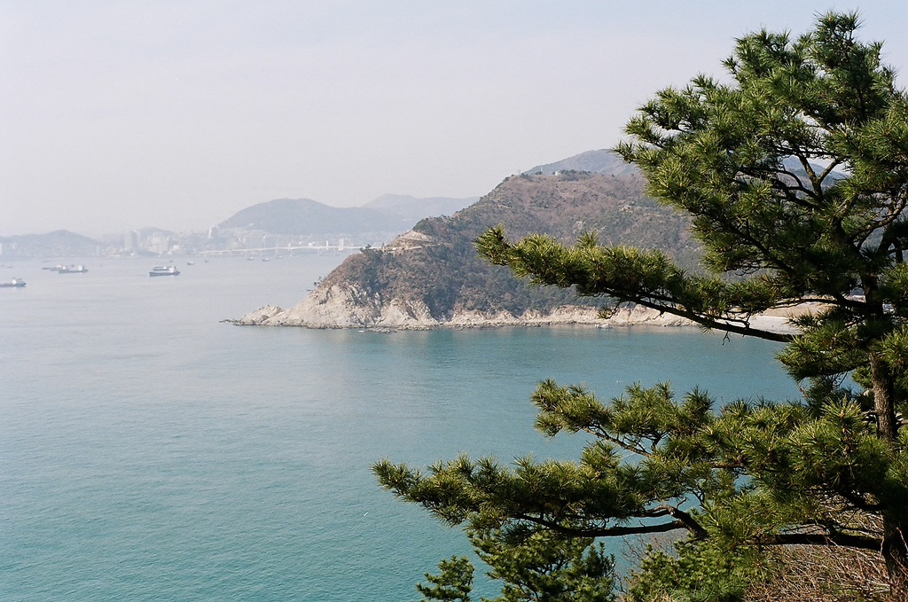

Natural Attractions

Haeundae Beach
Famous beach with luxury hotels and vibrant athmosphere

Taejongdae
Natural park with stunning sea cliffs and panomaric views

Songdo Beach
Scenic beach with the Songdo Cloud Trails skywalk.